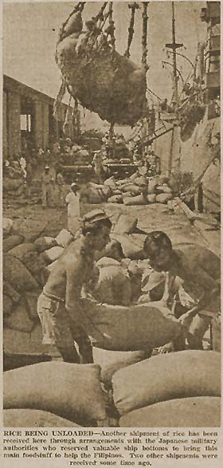

|
j
a v a s c r i p t |
November 20, 1943

Tribune: "Farmers' Day Observed ... President calls on people to cultivate all idle lands." A NARIC official "hopes" the typhoon only destroyed 20% of our rice crop. So far the Japanese have sent three shipments of rice over; the latest, 80,000 sacks or about 10 day's consumption, included rice in Philippine Sugar sacks. In other words, they returned some of the rice previously taken from Naric so they could keep the newer, higher quality rice. Naric people in the know are gnashing their teeth but keeping quiet to save their necks. Incidentally, they only have enough rice for this month's rations, and no more. News: The thrice sunk American Navy bombarded Buka Island for 45 minutes, on the heels of a 70 and 60-ton air raid on its airfield. |
|
|
|
|